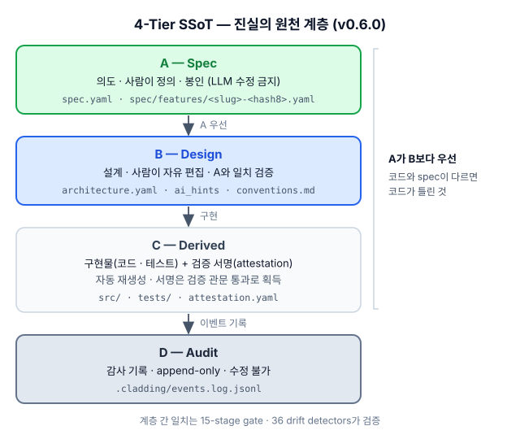

English · 한국어
cladding
기업이 AI에게 코딩을 맡기려면 세 가지가 필요하다 —
믿을 수 있고, 추적되고, 규모가 커져도 흔들리지 않아야 한다. cladding이 그 셋을 만든다.
cladding(외장재)이라는 이름 그대로, 호스트 LLM(Claude Code · Codex · Gemini · Antigravity · Cursor)을 감싼다: 일을 시작하기 전엔 프로젝트의 의도를 넣어 주고, 마친 후엔 41개 검출기와 15단계 게이트로 결과를 검증한다.

이 루프가 노리는 것은 하나 —
AI의 "다 됐습니다"를 말이 아니라 증명으로 만드는 것이다.
그래서 AI가 짠 코드를 사람이 짠 코드와 같은 기준으로 검증해 내보낼 수 있다 — 기업이 AI에게 코딩을 맡기는 데 필요한 세 가지다.
done으로 인정된다. 검증할 수 없는 "다 됐습니다"는 결코 통과하지 못한다.cladding은 자기 자신도 cladding으로 만든다 — 기능 270개 중 266개가 같은 게이트를 통과했고, Ironclad 표준을 L4로 구현한 첫 사례다.
무엇이 달라지나
같은 상황에서 일반 AI 코딩 환경과 cladding 환경의 동작 차이.
| 상황 | 일반 AI 코딩 | cladding |
|---|---|---|
| 코드가 spec과 어긋날 때 | 리뷰에서 발견하면 수정 | 편집 직후 자동 감지(알림) · 어긋난 채로는 "완료"가 통과 못 함 |
| AI가 "다 됐다"고 할 때 | 말을 믿는 수밖에 | 게이트 GREEN일 때만 done 획득 |
| 세션을 실패 상태로 끝낼 때 | 그대로 종료, 다음에 잊힘 | 종료를 한 번 막고, 실패한 검사를 수리 카드로 인계 |
| 두 명이 동시에 feature 추가 | merge conflict | hash-8 ID · 파일 분리 → 충돌 0 |
| AI가 짠 코드를 누가 검증? | 작성한 AI가 자기 검증 (위험) | 구현을 못 보는 채점자 + 기계 관문 |
| AI 도구를 바꿀 때 | 도구마다 재구성 | 1 spec → 4 host 자동 연결 |
누구를 위한 것
- AI에게 코드를 맡기는 개발자 — AI가 "다 됐어요"라고 해도 그대로 믿지 않는다. cladding이 실제로 통과했는지 확인하고, 통과했을 때만
done으로 인정한다. (루프로 자동화한다면 아래 루프 섹션이 그 역할을 한다.) - 사람과 AI가 함께 일하는 팀 — 사람이든 AI든 같은 스펙을 보고 일하니, 서로의 작업이 어긋나거나 충돌하면 자동으로 잡힌다. 누가 남의 것을 모르고 깨뜨리는 일이 없다.
- 결과를 증명해야 하는 조직 — 모든
done이 "실제로 검사를 통과했다"는 증거와 함께 코드에 남는다. 그래서 몇 달 뒤에도 "이거 검증된 건가? 왜 이렇게 했지?"를 기억이 아니라 저장소에서 바로 확인할 수 있다.
cladding이 호스트 LLM을 감싸는 방식
- 필요한 의도만 — 작업할 기능의 왜·관련 기능·검증 기준만 (전체 스펙을 덤프하지 않는다)
- 프로젝트 지도 주입 — 기능 수·진행 상황·마지막 검증 결과를 대화를 시작할 때마다 넘겨준다 (이제 눈으로도 볼 수 있다 ↓)
- 팀 규칙 적용 — 팀이 합의한 금지·선호 패턴을 매번 표준 지시로
- 15단계 게이트 · 41개 어긋남 검출기 — 통과해야만 완료로 인정된다
- 구현을 못 보는 채점자 — 구현을 읽을 도구 없이 산출물을 스펙과 대조하는 에이전트라, 자기가 쓴 것에 도장을 찍어 줄 수 없다
실시간 개입(지도 주입 · 즉시 차단 · 종료 차단)은 Claude Code에서 전부 동작한다. Codex · Gemini · Antigravity · Cursor에서는 같은 검증을 대화 속 도구 호출과 git·CI 관문으로 수행한다.
done은 선언이 아니라 획득이다
AI 코딩의 고질병은 "다 됐습니다" 가 검증 없이 선언되는 것이다. cladding에서 feature의
status: done은 쓰는 값이 아니라 얻는 값이다.

한계도 그대로 공개한다: 즉시 차단이 못 보는 우회 경로가 존재하며, 그 경우는 사후 검증(관문·어긋남 검사)이 잡는다. 즉시 차단이 1차 방어선, 사후 검증이 2차 방어선이고 어느 쪽도 단독 보증이 아니다.
cladding이 당신의 AI 루프를 받쳐 준다
루프 엔지니어링은 AI를 쓰는 방식을 바꾼다: 한 단계씩 프롬프트로 시키는 대신, 목표를 향해 AI를 굴리며 스스로 도는 루프를 만드는 것이다 — 파악, 계획, 실행, 검증, 반복. 하지만 루프는 그 검증 단계만큼만 정직하고, AI가 자기 일을 스스로 검사하게 두면 매번 자기한테 합격점만 준다. 그래서 루프 안에 진짜로 "아니오"라고 말할 수 있는 무언가를 넣는다 — 그게 cladding이다. AI의 자기 판단이 아니라, 코드를 당신의 스펙에 대조해 주는 검사다.

루프에 주는 세 가지:
- 바로 쓸 수 있는 신호 — 매 패스마다 무엇이 어디서 얼마나 나쁘게 실패했는지 기계가 읽는 결과로 돌려받는다. 콘솔 텍스트를 긁을 필요 없이 그대로 루프에 되먹인다 (
clad check --json). - 정직한 멈춤 — 루프는 AI의 말이 아니라 게이트로 끝난다. 엄격 게이트가 GREEN일 때만 피처가 done이 되고 아니면 되돌린다. "AI가 끝났다고 한다"가 "게이트가 통과시켰다"로 바뀐다.
- 패스 간 기억 — 로컬 로그(
.cladding/events.log.jsonl)가 이전 패스의 검사·시도·드리프트를 기억해서, 다음 패스가 맨눈으로 시작하지 않는다.
프로젝트 그래프 — 이제 눈으로 보고 물어본다
이것은 cladding이 프로젝트를 안에서 그려 둔 그래프다 — 스펙·코드·테스트·문서가 전부 연결돼 있다. 이제 눈으로 보고, 물어볼 수 있다.
cladding이 프로젝트를 보는 내부 그래프 — 가운데 파랑 = 스펙, 주황 = 코드, 초록 = 테스트, 분홍 = 문서. 연결이 많은 노드일수록 커지고 가운데로 모인다.

파랑 = 스펙(가운데) · 주황 = 코드 · 초록 = 테스트 · 분홍 = 문서; 연결이 많은 노드일수록 커지고 가운데로 당겨진다.
clad graph serve 하면 브라우저에 떠서, 뭐가 뭐랑 연결됐는지 한눈에 보인다.
그래프에 물어보면 영향받는 곳과 돌려야 할 테스트가 나온다 — 추측하지 않는다.
직접 띄워 보려면 — 프로젝트 폴더에서:
clad graph serve # 라이브 그래프 — localhost:3000, 저장하면 자동 새로고침
clad graph export --format html --out graph.html # 또는 오프라인 한 파일(.html)로 내보내기둘 다 cladding 0.7.0+ 필요.
내부 동작
Spec → Code → Tests가 한 cycle로 순환한다 — spec이 왜를 기록하고, 게이트가 검증하고, detector가 어긋남을 차단한다.

Spec — 프로젝트의 장기 기억. LLM은 세션 사이에 아무것도 기억하지 못하므로, 스펙은 프로젝트의 의도가 사는 곳이다: 지속적이고, git에 버전 관리되며, 모델이 시작하기 전에 주입된다. 왜와 무엇을 담고, 바로 아래 설계 계층이 어떻게를 담는다. (일어난 일의 로그가 아니라 의도의 기억이다.) 네 계층, 위에서 아래로: 의도(A) — 사람이 서명하기 전엔 봉인 — 그다음 설계(B), 코드+증명(C), 감사(D). A가 모든 것 위에 있다 — 스펙과 코드가 어긋나면 틀린 건 코드다.
기능마다 8자리 hash ID를 가진 별도 샤드 파일이라, 두 명이 동시에 기능을 추가해도 절대 충돌하지 않는다. 기능 하나는 이렇게 생겼다 — 무엇을, 검증 가능한 수용 기준으로 쓴 것:
# spec/features/checkout-a1b2c3d4.yaml
id: F-a1b2c3d4
slug: checkout-idempotency
status: done
acceptance_criteria:
- id: AC-9f3e21a0
text: "When a charge is retried with the same idempotency key, the system
shall return the original result and never double-charge."
test_refs: ["tests/checkout/idempotency.test.ts#retry returns the original charge"]EARS는 모든 기준을 검증 가능하게 유지한다 — WHEN <트리거> … the system SHALL <응답>, 위 text: 필드의 형태다.
→ 4계층 모델 · hash 기반 ID

Gate — 15단계 Iron Law. 검사 엔진은 하나, 비용에 따라 묶어서 건다 — commit 때 3단계, push · 완료 시점에 9단계, CI에서 15단계 전부:
- 정적 (6) — Type · Lint · Drift · Commit-clean · Architecture · Secrets
- 테스트 · 적합성 (4) — Unit · Coverage · Spec-conformance(구현을 못 보는 채점자) · Deliverable smoke (빈 초록을 차단한다: 테스트는 통과하는데 산출물은 한 번도 실행되지 않는 경우)
- E2E (3) — Smoke · Performance · Visual
- 증거 (2) — Audit(모든 수용 기준에 증거가 있다) · UAT(모든 done 기능에 증거가 있다)
→ 15단계 전체

Detector — 41개 어긋남 검출기. spec · code · test가 어긋날 수 있는 모든 방향을 잡는다:
| 방향 | 잡는 것 | # |
|---|---|---|
| spec ↔ code | 스펙에는 있는데 코드에 없거나, 스펙에서 벗어난 코드 | 10 |
| code ↔ test | 테스트 없는 코드 · coverage 하락 · 새어 나간 비밀 | 6 |
| spec ↔ test | 어떤 테스트도 검증하지 않는 수용 기준 · 거짓 상태 | 6 |
| spec 위생 | 스펙 자체의 무결성 — id 충돌 · 의존성 순환 | 8 |
| 환경 | 빌드 환경 · meta 파일 | 3 |
| 검증 신선도 | 검증 서명 이후 바뀐 코드 | 1 |
| 거버넌스 · 문서 | 정책 위반 · 문서 어긋남 · 근거를 넘어선 주장 | 4 |
| 그래프 · 문서 링크 | 끊어진 문서 ↔ 스펙 링크 · 빠진 의존성 엣지 | 3 |
이 검출기들이 떠받치는 그래프는 그 장기기억을 질의 가능하게 만든 것 — traceability / retrieval이지 정확성 주장이 아니다: 무엇이 무엇에 연결되고 무엇을 다시 봐야 하는지, 코드가 옳다는 게 아니다. → detector 카탈로그 전체
한 기능의 생애주기는 Define → Sync → Implement → Earn으로 흐른다 — 모든 검사를 통과해야만 done을 얻는다.
Multi-Agent
AI에게 코드를 맡기면 보통 테스트도 같이 맡긴다. 그런데 같은 AI가 둘 다 쓰면, 테스트는 자기가 쓴 코드에 맞춰진다. 버그가 있어도 테스트는 통과한다. 초록불이 아무것도 증명하지 못하는 상태다.
그래서 cladding은 기능이 끝날 때마다 한 가지를 묻는다: 만든 쪽과 확인한 쪽이 서로 달랐는가? 그 답을 완료에 적어 둔다. (에이전트를 몇 개로 어떻게 돌릴지는 호스트가 정한다 — cladding은 멀티에이전트 프레임워크가 아니고, 에이전트를 배치하지 않는다.)

- 한 에이전트가 만들고, 테스트하고, 스스로 통과시켰다 —
self-certified. 자기가 방금 쓴 코드에 테스트를 맞출 수 있으니, 통과가 곧 확인은 아니다. - 아무도 따로 확인하지 않았다 — 마찬가지로
self-certified. 잘못했다는 뜻이 아니다. 확인한 기록이 없다는 뜻이다. - 다른 에이전트가 코드는 못 본 채 스펙만 보고 테스트를 썼다 —
independent. 버그를 못 봤으니 버그에 맞출 수도 없다 — 라벨을 정하는 건 말이 아니라 그 에이전트가 열어 볼 수 있었던 것이다.
만드는 쪽과 확인하는 쪽을 나눠 두면 된다. EU AI Act·SOX 같은 감사 규정이 요구하는 직무 분리와 같은 방식이지, 정식 인증이 아니다.
Ecosystem
기존 세 카테고리의 결합부에 cladding이 있다.

인접 도구와의 차이
- Spec Kit · OpenSpec · Tessl · Kiro — spec을 잘 쓰게 도와주는 도구. cladding은 거기에 더해 그 spec과 실제 코드가 어긋나지 않는지 개발 루프 안에서 계속 자동 대조한다.
- BMAD · ChatDev · Claude Code Agent Teams — 여러 AI 에이전트의 역할 분담 시스템. cladding은 그 분담을 대신 굴리지 않고, 호스트가 무엇을 돌렸든 spec · 게이트 · 감사 기록에 비추어 판정한다.
- tdd-guard — AI가 테스트를 먼저 쓰도록 강제하는 도구. cladding의 15단계 중 Unit · Coverage · oracle 단계가 같은 일을 더 구조적으로 한다.
- OpenHands · Cline · Aider · Goose — AI에게 코드를 짜게 시키는 실행기. cladding은 그 실행기가 짠 코드를 검증·통제하는 상위 레이어다.
cladding의 차별점은 결합 — 위 카테고리의 핵심을 하나의 검증 루프로 묶는 것.
Install
1. 컴퓨터에 한 번 설치하기
npm install -g cladding # cladding CLI 설치이 단계는 어느 디렉터리에서 실행해도 된다. CLI만 설치하며 AI 도구에는 아직 Cladding 정보가 들어가지 않는다.
2. 사용할 프로젝트만 연결하고 AI 도구 실행하기
cd <project>
clad setup # 이 프로젝트에만 AI 도구 연결
# 정확히 하나를 골라 앞의 '#'을 지우고 실행한다:
# codex # Codex
# claude # Claude Code
# gemini # Gemini CLI
# agy # Antigravity
# cursor-agent # Cursor Agentclad setup은 이 머신에서 감지된 AI 도구(Claude Code · Codex · Gemini · Antigravity · Cursor)를 현재 프로젝트에만 연결한다 — 단 Antigravity는 프로젝트-로컬 MCP 설정을 읽지 않는 호스트라 유일하게 머신 단위로 연결된다(자세한 내용은 setup 문서). 설정하지 않은 다른 프로젝트의 모델 컨텍스트에는 Cladding skill이나 MCP 도구가 들어가지 않는다. Cursor IDE는 <project> 폴더를 작업공간으로 연다. setup 뒤에는 반드시 이 폴더에서 AI 도구를 새 세션으로 시작한다. Codex와 Gemini가 프로젝트 신뢰 여부를 물으면 각 호스트의 정상 보안 경계에 따라 승인한다. 신뢰하기 전에는 프로젝트 로컬 MCP 설정이 의도적으로 적용되지 않는다.
3. 프로젝트에 Cladding 한 번 적용하기
자신의 시작 상황에 맞는 요청을 AI 도구에 자연스럽게 말한다.
Cladding은 먼저 프로젝트를 읽기 전용으로 조사한다. AI가 정확한 파일 작업과 일회용 승인 문구를 보여주며, 사용자가 별도 답변에서 그 문구를 그대로 입력해야만 초기화가 시작된다. 프로젝트를 열거나 Cladding에 관해 질문하는 것만으로는 어떤 파일도 변경되지 않는다. 이 정확 일치 단계는 우발적인 적용을 막지만, MCP는 도구 인자를 실제로 어느 사용자가 만들었는지 증명할 수 없다. 따라서 악의적이거나 침해된 호스트를 격리하는 샌드박스로 보아서는 안 된다.
아이디어만 있을 때
B2B 결제 SaaS를 cladding으로 시작해줘.LLM이 도메인을 분석해 spec · 문서 · 정책을 만든다. 중요한 제품 결정이 실제로 비어 있을 때만 후속 질문을 최대 3개 하며, 완성된 기획에는 질문하지 않는다.
기획 문서가 있을 때
docs/plan.md를 기준으로 cladding을 적용해줘.파일을 읽고 그 내용을 프로젝트 intent로 사용한다.
기존 프로젝트에 도입할 때
현재 코드를 분석해서 cladding을 적용해줘.기존 코드를 스캔하고, 관찰한 패턴을 사용자의 intent와 결합한다.
초기화가 끝나면 같은 대화에서 바로 개발을 이어가면 된다. 다음 기능을 자연어로 요청하면 AI가 생성된 spec과 문서를 기준으로 개발하고, 중요한 설계 변경도 프로젝트 성장에 맞춰 함께 반영한다. 검사는 호스트가 호출할 때 실행되며, 자동 강제가 필요하면 선택형 Git hook이나 CI 게이트를 사용한다.
이메일 로그인 기능을 테스트까지 포함해서 구현해줘.새로 외울 명령은 없다. 호스트별 명시 호출법, 더 강한 Git/CI 적용, 검증된 호스트 현황은 설치 상세에서 확인할 수 있다.
Update
AI 도구에 요청하기 (추천)
프로젝트에서 다음과 같이 말한다:
cladding을 최신 버전으로 업데이트해줘.AI 도구에 터미널 및 전역 설치 권한이 있으면 CLI 업데이트, 호스트 배선 갱신, 현재 프로젝트 업데이트를 수행하고 새로 발견한 어긋남을 설명한다. 권한이 없으면 승인하거나 직접 실행할 명령을 안내한다.
또는 터미널에서 직접 업데이트하기
npm update -g cladding # 1. 새 버전 받기
cd <project> # 2. Cladding 프로젝트로 이동
clad update # 3. 프로젝트 연결과 파생 데이터를 함께 갱신clad update는 업데이트하려는 각 Cladding 프로젝트에서 실행한다. 프로젝트 전용 setup 갱신까지 함께 수행하므로 별도의 clad setup은 필요 없다. 사용자가 작성한 코드 · 기능/스펙 본문 · 문서는 보존되며, 파생 데이터와 Cladding 관리 지침 블록만 갱신될 수 있다. 새 버전이 어긋남을 발견하면 그 결과를 AI 도구에 넘기면 된다:
업데이트가 짚은 어긋남을 정리해줘.Status
|
version
v0.9.2
2026-07
|
준수 등급
L4
|
tests
2736/2736
all pass
|
gate
15 단계
41 detectors
|
features
270
266 done · 자기 스펙
|
248 test files · capability 6개 · coverage는 COVERAGE_DROP detector가 하락 차단
Ironclad 1.0까지의 길 — 1.0은 독립적인 두 개의 구현이 L4 검증 셋을 통과해야 잠긴다 (GOVERNANCE § 1). cladding이 첫 번째.
Docs
- Why cladding (project context)
- A/B & real-usage evidence
- 4-tier governance model
- The 15 gate stages
- Hash-based feature ID
- 41 detector catalog
- Setup · host wiring · upgrading
- 용어집 (EN · KO)
- Governance · roadmap to 1.0
License
MIT. LICENSE · 관련: Ironclad (구현 대상 표준) · harness-boot (seed).